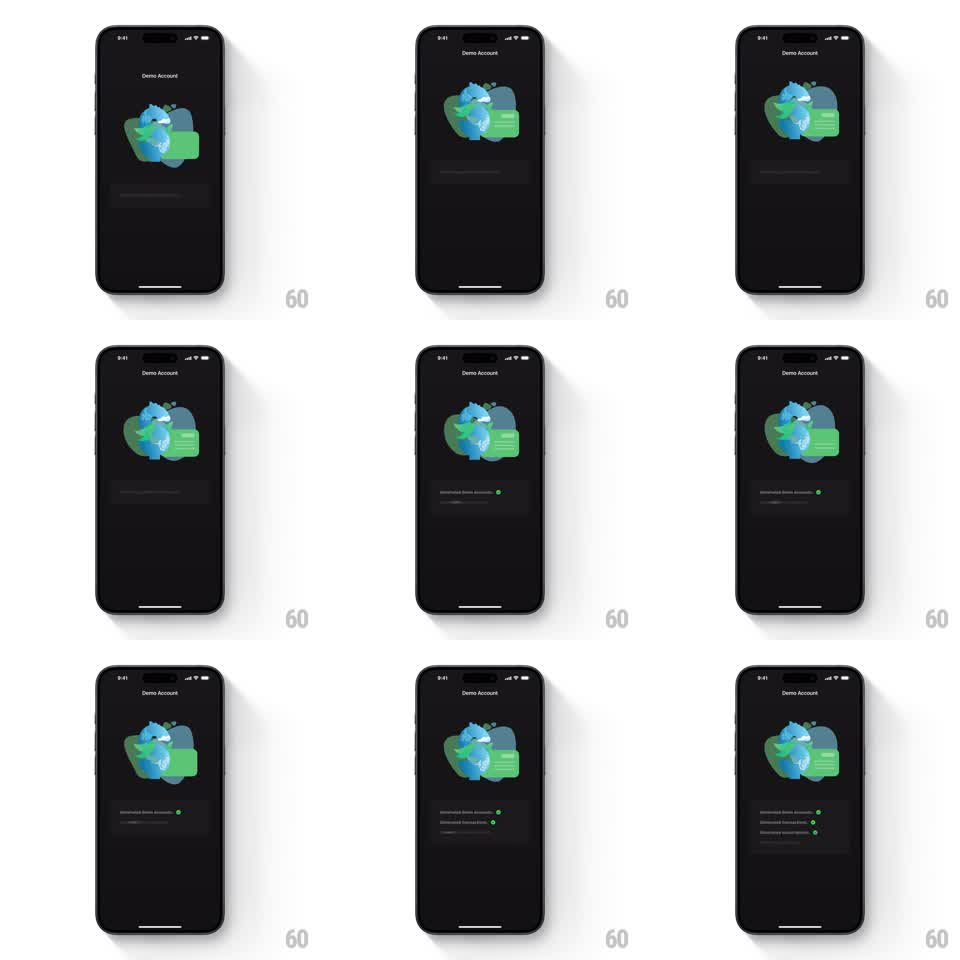

Media
Frame-by-frame

Rebuild this animation 1:1: Finma's demo account setup checklist - on the dark "Demo Account" screen under a globe-and-card illustration, setup rows stagger in one at a time, each showing a loading beat before its green checkmark pops in.

Rebuild this animation 1:1: Finma's demo account setup checklist - on the dark "Demo Account" screen under a globe-and-card illustration, setup rows stagger in one at a time, each showing a loading beat before its green checkmark pops in. ## Integration Integration: stack-agnostic spec - springs given as stiffness/damping, timed motions as duration + curve; map every value to your framework and animation library of choice. ## Scene Dark "Demo Account" screen: header title, an illustration of a globe with green cards floating around it, then a checklist area where rows appear sequentially - each row a label (connecting/importing steps) with a status at its right, ending in a small green check. Three checklist rows complete by the end. ## Motion spec Pattern: sequential checklist with loading-to-check pops. - Entrance: the illustration fades in (300ms) with a slow float (translateY +-4pt, 3s loop); the first row slides up (translateY 12pt -> 0, opacity, 250ms). - Each row: a spinner runs at its right (600ms), then the green check pops (scale 0.5 -> 1.15 -> 1, spring ~340/14, 250ms) while the label brightens (gray -> white, 200ms). - Rows cascade with 400ms between starts; each new row slides up as the previous one checks. - After the final check, a beat of stillness (all green, 400ms), then the page is ready to advance. ## Calibration - Only one spinner at a time - the checklist is strictly sequential. - The green check is the single accent color on the dark screen. ## Reduced motion Rows fade in pre-checked (200ms stagger) without spinners. ## Don't miss - The illustration floats gently the whole time - the checklist is the only staged element. - Labels brighten when their check lands, not before.